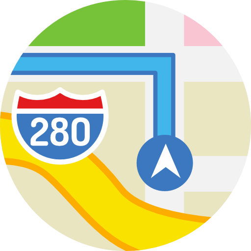
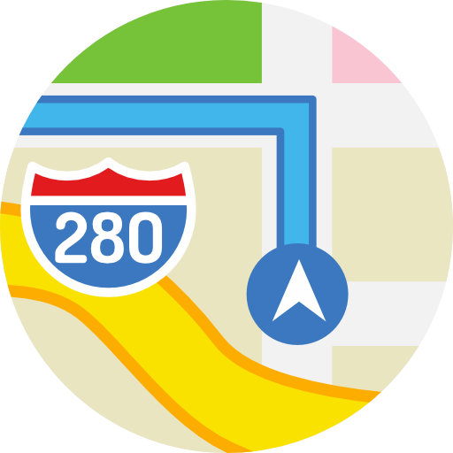

About Us
Our Clinics
Our Services
About Us
Services
Clinics
WELCOME TO WEIKIEN DENTAL
Tee Dental Surgery was founded in the year 2000 by Dr. Tee Hui Kien in Pusat Bandar Puchong with a clear vision to make quality dental care accessible and affordable for the community. Since its humble beginnings, the clinic has grown steadily, building a reputation for professional excellence, compassion, and patient-centered service. Over the past 25 years, Tee Dental Surgery has proudly cared for more than 70,000 unique patients and completed over 100,000 treatments, ranging from preventive and restorative care dental solutions. In 2012, to accommodate its expanding patient base and provide a more modern and comfortable environment, the clinic was relocated to SetiaWalk, Puchong, where it continues to serve families across the area. Furthering its growth and commitment to community care, a new branch, Teecare Dental Clinic, was established in Seri Kembangan in 2024. Today, guided by Dr. Tee’s dedication, both clinics remain trusted destinations for quality family dental care.
Patients Treated
Since
Please contact us for price/ enquires
Consultation
Scaling & Polishing
Dental Filling
Extraction
Minor Oral Surgery
Removable Denture
Crown & Bridge
Root Canal Treatment
Tooth Whitening
Night Guard
Retainer
We prefer Whatsapp / Call
Setia Walk F, 9-5, Pusat Bandar Puchong, 47160 Puchong, Selangor
Mon - Thu: 1:00PM to 7:00PM
Fri: 5:30PM to 8:30PM
Sat & Sun: 9:30PM to 8:30PM

 

Setia Walk F, 9-5, Pusat Bandar Puchong, 47160 Puchong, Selangor
Mon - Thu: 1:00PM to 7:00PM
Fri: 5:30PM to 8:30PM
Sat & Sun: 9:30PM to 8:30PM
Genuine reviews from our patients
It's a very pleasant and comfortable dental clinic. This is their 2nd branch after the 1st branch in Setia Walk Puchong. The dentist(Dr Tee) is very skilful and knowledgeable. Have been visiting her for many years. It's definitely a good choice for all kinds of dental treatment, as far as I know.
My first time coming to Teecare clinic. I was scared at first but Dr and nurse guide me, helping me with my treatment and both are very kind. They keep me calm and keep checking on me to see if I was ok during the treatment which make me less nervous. Overall, I am really satisfied with the service and the price is really reasonable. Recommended! 5 star 🌟🌟🌟🌟🌟